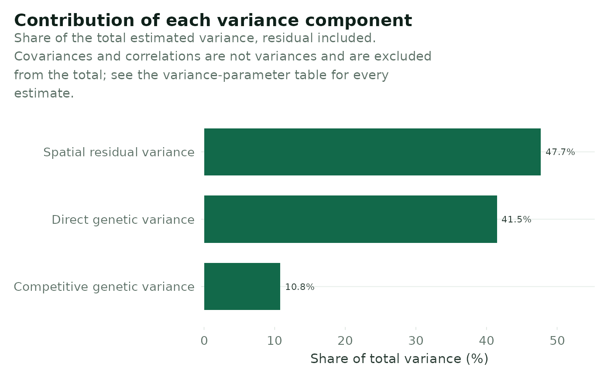

Variance components as a share of the total.
Arguments
- varcomp
The variance-parameter table from `fit_single_model()$varcomp` or `fit_met_model()$varcomp`. Bars are labelled with the `Interpretation` column where present, so that ASReml parameter strings never reach the figure.
- base_size
Base font size in points. [save_figure()] chooses this from the export width; pass it explicitly only when composing a figure by hand.
- caption
Optional caption placed under the figure, wrapped to the plot width.
Examples
vc <- data.frame(
Component = c("Geno", "N1", "Column:Row!R"),
Interpretation = c("Direct genetic variance", "Competitive genetic variance",
"Spatial residual variance"),
Estimate = c(0.27, 0.07, 0.31),
Pct_of_total = c(41.5, 10.8, 47.7)
)
plot_variance_components(vc)
